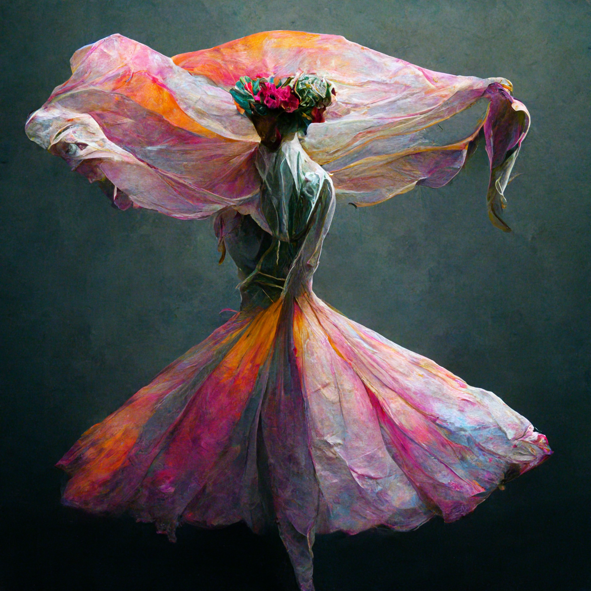

A Theist atheist
A freestyle poem I drafted in 2016Sometimes I feel like an atheist-
and a heathen,
stop me before it's too late.
Imbibing each and every thing
leads my beliefs to lessen‚
leaves me asleep‚ awake.
Then as I dive deep‚
the last celestial book
satisfies my soul‚
shuts the window-
to the fallen angel‚
and strengthens my role.
A random visualisation by MidJourney
A random thing I wrote back in 2017
The depth of these tears is pretty complicated.
When we understand a little, a little more it complicates.
We are nothing but a lost sailor with his ship in an ocean,
dependent on the wind.
So, we cry a little deeper, sometimes a little less
We can't control the droplets of emotions.
somehow we manage to stop them for a scarce
and then again when we meet solitude,
We depend on the winds,
And for that moment when we are alone,
We are real.